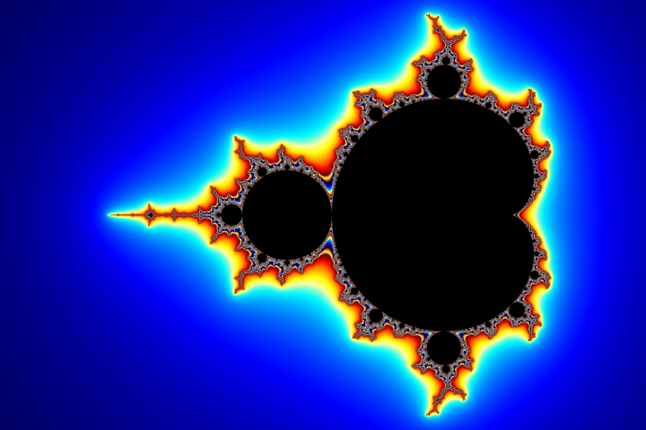

Basic Math Concepts
1 min
December 31, 2022

We will study several Mathematical Concepts and apply them to Art and Design. Their methods will be examined and then coded in p5.js to implement projects of interest. (We might on a later occasion try to use q5.js / p5play.js. Other open source tools (FOSS) and Javascript libraries may also be introduced as and when needed and as and when I learn and get excited about them. )
This course stands on “three legs”: Maths, Code + Tech, and Artifacts, as shown below. As this course grows and hopefully becomes more un-popular ;-D, more and more of these modules below will become reality!
| Maths | Code + Tech | Artifacts |
|---|---|---|
| Iterated Functions Complex Numbers Random Numbers Vector Algebra Perlin Noise |
p5.js / q5.js / p5play.jsShapes Stack, Push and Pull, Translate Vectors Recursion Constructors and OOP |
Fractals Kolams Angolan Sona Patterns L-Systems Symmetries Textures |
| Linear Systems Impulse Responses Convolution Electrical System Theory (poles; zeroes; resonance…)? DSP basics? AM/FM/PM Modulation? Fourier Series Bessel Functions? Waves; Echoes ? Non-linearities; Saturation; Hysteresis ? |
Adding External Physics and Sound Librariesp5.soundCamera, Sound and Mic Handphone based Interactions OSP Protocol based interactions with external hardware over WiFi / BT |
Sound Video Text Crowd-Sourced acts (jam session; flash-techno mob…)? Mouse - Touchpad Orchestra? |
| Neural Net Basics Matrix Algebra Training Backpropagation Gradient Descent Classification, Regression, Clustering |
ml5.js libraries |
Multi-Layer Perceptrons Convolutional Neural Networks Pose, Gesture, and Face Detection |
| Complexity and Emergent Phenomena? | Interfacing p5.js with Makey-Makey / Arduino / Raspberry Pi?Sensors? Working with other materials like sand, water, paper, wood, cloth, balloons ? “Action at a Distance” using say |
Friendship Networks? Games? Public Space Installations Simulations Remote Education with Gesture tracking and live Coding? “Literary” Events with Tech? |
| I’ll | Be | Back |
p5.js.>ambient)poissoned R package by @coolbutuseless